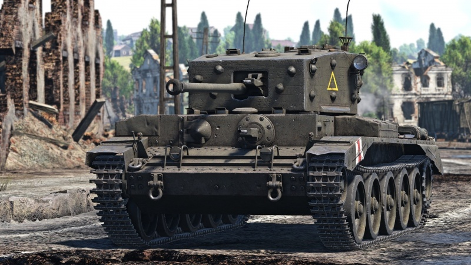
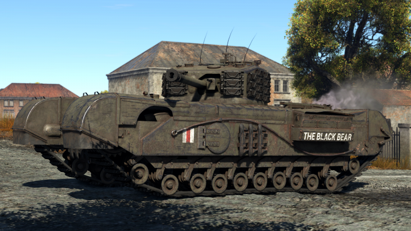
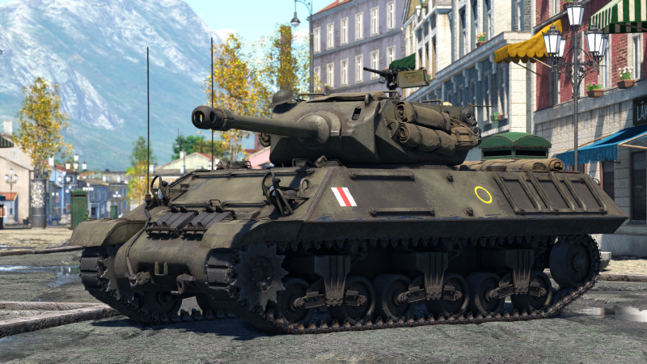
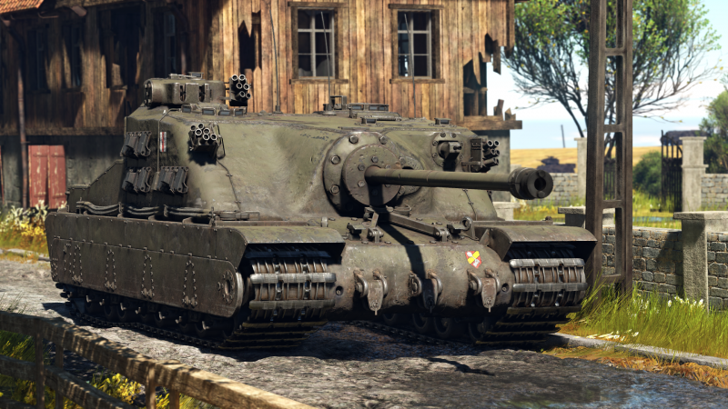

Bem-vindo à "The Bulldog Barber Shop: Uma viagem pela história dos tanques britânicos da Segunda Guerra Mundial"!
Nossa barbearia temática é um lugar único onde você pode experimentar o estilo e a vibração dos tanques britânicos lendários enquanto cuida do seu visual.
Aqui, cada detalhe foi cuidadosamente projetado para lembrar os gloriosos dias da guerra, com ênfase especial nos icônicos veículos de guerra britânicos.
Ao entrar na "The Bulldog Barber Shop", você será imediatamente transportado para uma atmosfera nostálgica da década de 1940.
As paredes são decoradas com fotografias autênticas, pinturas e pôsteres da época, exibindo a majestade dos tanques britânicos em ação.
Os clientes podem relaxar em cadeiras de barbeiro vintage que foram adaptadas para se assemelhar aos assentos de comandantes de tanques.
As luzes do ambiente são suaves e evocam uma sensação de intimidade, tornando a experiência de barbear ainda mais agradável.
Nossos talentosos barbeiros, conhecidos como "Comandantes de Estilo", são especialistas em seu ofício e apaixonados por história militar.
Eles são treinados para oferecer os cortes de cabelo e barbas mais modernos, combinando técnicas tradicionais com um toque contemporâneo.
Além disso, eles estão sempre prontos para compartilhar histórias e curiosidades fascinantes sobre os tanques britânicos da Segunda Guerra Mundial, proporcionando uma experiência educativa única enquanto você cuida de sua aparência.
Em nossa barbearia, você também encontrará uma loja de produtos exclusivos relacionados à Segunda Guerra Mundial e aos tanques britânicos.
Desde óleos para barba com fragrâncias inspiradas em gasolina e couro até pentes de alta qualidade em forma de tanques, temos uma variedade de itens que certamente agradarão aos entusiastas da história militar.
Na "The Bulldog Barber Shop", não apenas oferecemos um serviço de barbearia excepcional, mas também proporcionamos uma experiência imersiva e única.
Venha visitar-nos e descubra a elegância atemporal dos tanques britânicos da Segunda Guerra Mundial enquanto cuidamos do seu estilo com maestria!
   